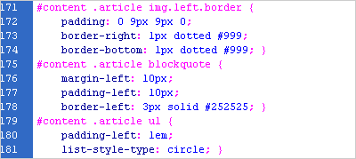

There are three ways to inject a bit of CSS magic into your web pages. They are inline styles, in-document styles via the <style> tag, and linked style sheets. Each is valuable in its own right – the trick is knowing when to use them.
Inline styles are the most basic way of applying styles to an element, in that you apply the styles directly to the tag in your HTML. For example, this is an inline style:
<p style="font-size: 200%;">
This text will be twice the size
of your other paragraphs.
</p>
This is most useful when you are trying out new tags. In the example above, if I had several paragraphs on my page, I could easily try out several styles on several paragraphs to more quickly find the exact look I was going for. It’s also useful if you need to override a more global style in one specific instance: if you’re using inline, in-document and linked CSS all at the same time, inline styles take precedence.
In-document (AKA “embedded”) styles make use of the <style> tag within the HTML document’s head, like so:
<style>
p {
font-size: 200%;
}
</style>
This technique is best used when you have one page that needs to be styled differently from every other in your website. You still have the flexibility to apply styles to your entire document, and those styles have the opportunity to cascade and change broad swaths of your page with little effort, but to apply these styles to more than one page, you have two options: copy and paste the styles into all your documents (messy, if you ever make any changes), or use linked style sheets.
Linked style sheets are the preferred method for applying CSS to a website. Here, your CSS resides in a separate document, outside of your HTML entirely. You then link to it in your document’s head like this:
<link rel="stylesheet" href="style.css"
media="screen" />
There are three important pieces here:
- Rel: Stands for “relationship.” Tells your browser that this is a stylesheet.
- Href: Stands for “hypertext reference.” This is how your browser knows where to find the stylesheet. If it’s in a different directory, you’ll have to show that in your href.
- Media (optional): Says that this stylesheet should be applied to the screen. If you leave this off, it will still be applied to the screen.
And most importantly, you can just include this one line of code in the top of every page you want to have styled (between the <head> and </head> tags), and the browser takes care of the rest. Now if you ever make a change to your CSS, you can just change it in that one file, and the changes will take place automatically across your entire site. And that, when you get right down to it, is really what makes this whole CSS thing so great in the first place.
Pingback: When to Use Inline, In-Document, and Linked CSS | Website Directory
I’m pretty sure the rel stands for “relationship”:
http://www.w3.org/TR/html4/struct/links.html#adef-rel
You know, I think you’re right. I’ve edited the post to reflect the accurate definition. Although I maintain that “relevance” makes a certain sort of sense, too. :)
Thanks, Justin!
Pingback: When to Use Inline, In-Document, and Linked CSS | CSS Tutorials - CSSHelper.net
forth category: In-Firebug – possibly the most useful for testing
anyway, it is more optimized to put css into the css file, right?